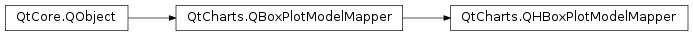

QtCharts.QHBoxPlotModelMapper¶
Note
This class was introduced in Qt 5.7.
Synopsis¶
Functions¶
- def
columnCount() - def
firstBoxSetRow() - def
firstColumn() - def
lastBoxSetRow() - def
setColumnCount(rowCount) - def
setFirstBoxSetRow(firstBoxSetRow) - def
setFirstColumn(firstColumn) - def
setLastBoxSetRow(lastBoxSetRow)
Signals¶
- def
columnCountChanged() - def
firstBoxSetRowChanged() - def
firstColumnChanged() - def
lastBoxSetRowChanged() - def
modelReplaced() - def
seriesReplaced()
Detailed Description¶
-
class
PySide2.QtCharts.QtCharts.QHBoxPlotModelMapper([parent=nullptr])¶ Parameters: parent – PySide2.QtCore.QObject
-
PySide2.QtCharts.QtCharts.QHBoxPlotModelMapper.columnCount()¶ Return type: PySide2.QtCore.int
-
PySide2.QtCharts.QtCharts.QHBoxPlotModelMapper.columnCountChanged()¶
-
PySide2.QtCharts.QtCharts.QHBoxPlotModelMapper.firstBoxSetRow()¶ Return type: PySide2.QtCore.int
-
PySide2.QtCharts.QtCharts.QHBoxPlotModelMapper.firstBoxSetRowChanged()¶
-
PySide2.QtCharts.QtCharts.QHBoxPlotModelMapper.firstColumn()¶ Return type: PySide2.QtCore.int
-
PySide2.QtCharts.QtCharts.QHBoxPlotModelMapper.firstColumnChanged()¶
-
PySide2.QtCharts.QtCharts.QHBoxPlotModelMapper.lastBoxSetRow()¶ Return type: PySide2.QtCore.int
-
PySide2.QtCharts.QtCharts.QHBoxPlotModelMapper.lastBoxSetRowChanged()¶
-
PySide2.QtCharts.QtCharts.QHBoxPlotModelMapper.modelReplaced()¶
-
PySide2.QtCharts.QtCharts.QHBoxPlotModelMapper.seriesReplaced()¶
-
PySide2.QtCharts.QtCharts.QHBoxPlotModelMapper.setColumnCount(rowCount)¶ Parameters: rowCount – PySide2.QtCore.int
-
PySide2.QtCharts.QtCharts.QHBoxPlotModelMapper.setFirstBoxSetRow(firstBoxSetRow)¶ Parameters: firstBoxSetRow – PySide2.QtCore.int
-
PySide2.QtCharts.QtCharts.QHBoxPlotModelMapper.setFirstColumn(firstColumn)¶ Parameters: firstColumn – PySide2.QtCore.int
-
PySide2.QtCharts.QtCharts.QHBoxPlotModelMapper.setLastBoxSetRow(lastBoxSetRow)¶ Parameters: lastBoxSetRow – PySide2.QtCore.int
© 2018 The Qt Company Ltd. Documentation contributions included herein are the copyrights of their respective owners. The documentation provided herein is licensed under the terms of the GNU Free Documentation License version 1.3 as published by the Free Software Foundation. Qt and respective logos are trademarks of The Qt Company Ltd. in Finland and/or other countries worldwide. All other trademarks are property of their respective owners.